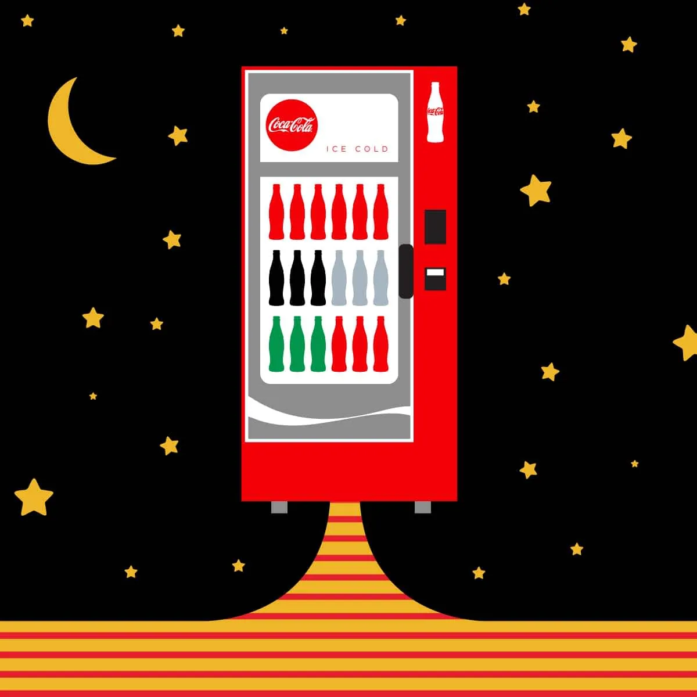
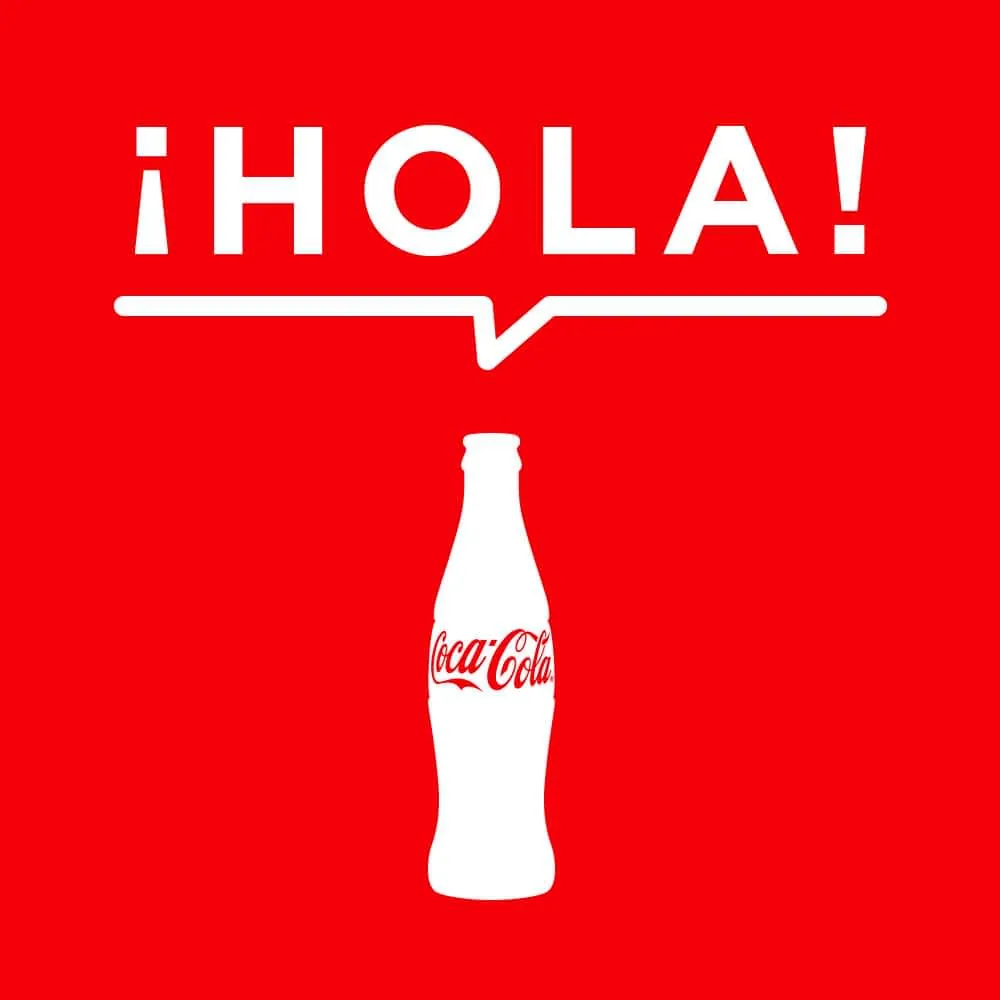
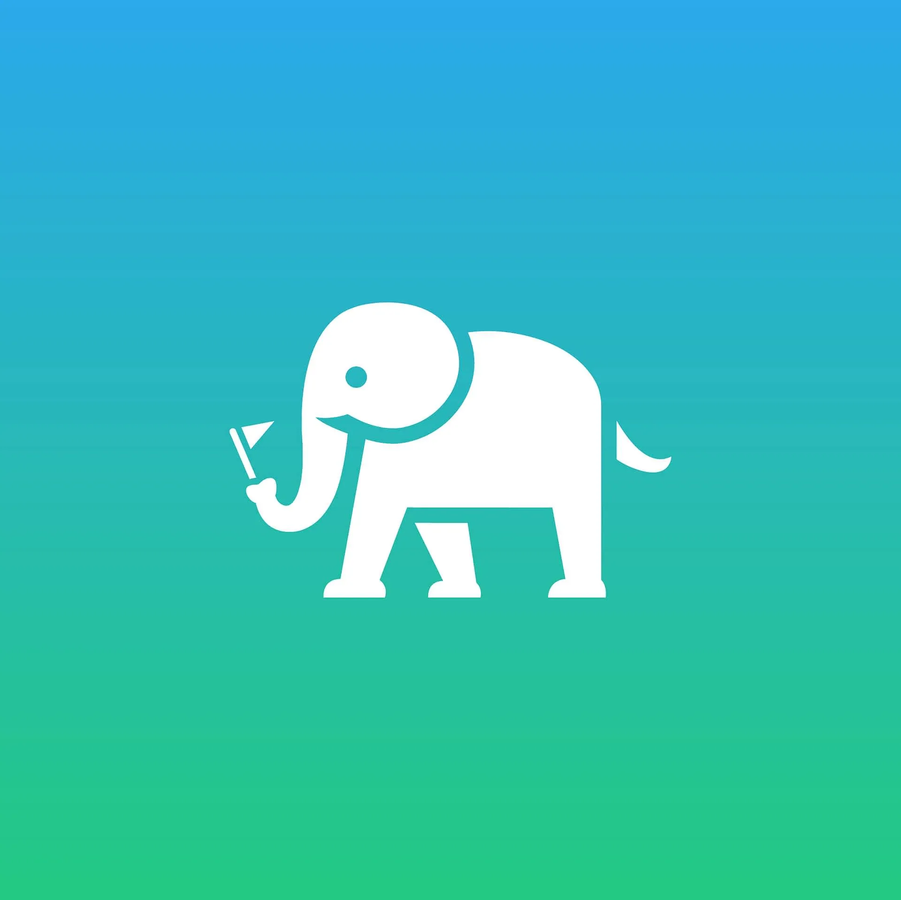

Capabilities
Visual Identity
VariousA collection of logo and brand identity work

Coca-ColaDesigning for one of the world's most iconic brands

Coca-ColaUnified campus communication experiences across Coca-Cola's world headquarters

ParadesmithBuilding an MVP to transform scattered online content into curated community experiences